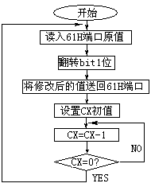
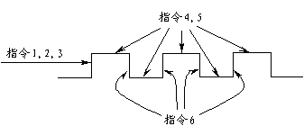

还记得我们前面的讨论吗？若要让喇叭发声，关键是连续改变61H端口的bit1位的状态。但由于8086/88在设计时规定端口不能直接参与任何运算和逻辑操作，因此程序必须首先将61H端口内各个位的当前状态取到CPU中。这就是第一条指令的作用。
助记符：IN（In）
用 途：将某端口的数据取至累加器
格 式：IN 累加器，端口号
执 行：端口内各个位的状态传送至累加器（AL或AX）
IN是这条指令的助记符，此指令的作用如上所述。由于累加器是CPU和端口之间的"唯一"通路，因此在此程序的这条指令中只能使用AX寄存器。而且程序现在要从端口中取得8bit数据，则我们必须要用AX的低8位--AL。注意不能用AH寄存器。像这样的用法--"IN AH，61"或"IN BL，61"都是不对的。
十六进制数字"61"就是提供数据的端口地址。对于地址小于0FFH的端口都可以在指令中直接引用地址，而超过0FFH的端口不能这样应用。例如"IN AL，1C0"这样的用法是错误的。至于如何取得地址大于0FFH的端口状态，将在后面介绍。
这里有三个问题应注意：
① 助记符后的空格只能多而不能省，指令中的逗号不能丢；
② DEBUG只接收16进制数，如果使用其它进制数应先转换成16进制；
③ 数据进入累加器后，各个位排列排列顺序与端口是一一对应的，即AL的bit0对应
对应于端口的bit0，而AL中的bit7也对应于端口的bit7。
取得此端口的状态后，我们要改变bit1位的0、1状态，而端口的原状态是不确定的，况且我们还想使第一位的状态能够连续"翻转"，所以我们选择了异或操作（见前一章）。这就是程序中的第二条指令--XOR。
采用异或操作改变某个位时要注意必须用"1"作为操作数，只有用"1"才能达到让某个位连续"翻转"的目的。在给出的程序中由于要让AL的bit1位改变，所以操作数的bit1位是"1"。
寄存器同IN指令相比，XOR的用法要丰富得多。首先我们可以把一个寄存器和一个二进制数作XOR操作，也可以把一个放在内存中的数据和一个二进制数作异或，还可以把这个操作码放入一个寄存器或内存中。
助记符：XOR
用 途：对寄存器或内存中的数据作"异或"操作
格 式：XOR 寄存器，操作码
XOR 存储器，操作码
XOR 寄存器，寄存器
XOR 存储器，寄存器
XOR 寄存器，存储器
执 行：两个操作数进行"XOR"操作后,结果存入左边的寄存器或存储单元中。
使用这条指令有两个要点要注意：
① 操作结果都保存在左边的寄存器或内存单元中，右边的数据不变。这也就是说，左边必须是寄存器或内存单元；
② 两边数据的位宽要一致。像这样的用法--XOR AX，BL是不对的。至于如何应用此指令"异或"内存单元中的数据将在后面介绍。当务之急是掌握第一种用法。
执行过此指令后，AL寄存器的bit1位状态发生了翻转。但此时端口中的各个位状态并没有改变。因此，程序需要把AL中的数据返回到61H端口中。这就要用下面介绍的OUT指令：
助记符：OUT
用 途：将累加器中的数据返回到端口中
格 式：OUT 端口，累加器
执 行：端口内各个位原状态被新值代替（AL或AX）
应用这条指令的注意事项和IN指令相同，不再多讲。
CPU连续执行这样三条指令就可以使61H端口第一位发生状态变化，如果这三条指令反复的被执行，那么XOR指令就会使61H端口的bit1位"连续"翻转。所以程序中最后一条指令的作用就是返回到100H继续执行这三条指令。
助记符：JMP（Jump）
用 途：从本指令开始的地址转移到内存其它位置继续执行程序
格 式：JMP 目的地址
执 行：CPU从CS:IP指向的新地址继续取指令执行
这条指令的实际功能是改变"CS:IP"的指向，前面我们已经讨论过CPU执行的指令都来自
于"CS:IP"指向的内存单元，因此"CS:IP"的改变就意味CPU执行的指令要发生改变。所谓"跳转"的含义也就是如此。
为了反复执行前三条指令，我们在程序最后用"JMP 100"使CPU重新从"CS:0100"开始执行指令。
有关JMP还有一些便深入的内容，例如在这个程序中CS寄存器的内容并没有改变，即转移发生在一段之内。那么如果要"跨段"转移又应如何应用JMP指令呢？这个问题暂且留作后话。
这四条指令构成一个"循环"，使61H端口第一位的状态在0、1之间连续变化。但是，如果没有第4，第5条指令，那是无法听到任何声音的。这是因为CPU执行指令的速度极快，61H端口的bit1位变化频率过高，己超出了听觉范围。因此程序在改变了端口61H的状态后应该"拖延"一段时间，再做第二次改变。第4，5条指令的作用就是"拖时间"。
助记符：MOV（Move）
用 途：传递数据
格 式：MOV 寄存器，数字
MOV 存储器，数字
MOV 寄存器，存储器
MOV 存储器，寄存器
MOV 寄存器，寄存器
执 行：右边的数据被"拷贝"到左边的寄存器或存储单元中。
同IN，OUT指令有些类似，数据仍然是从"右"传到"左"，这实际上汇编语言的一个规律，和高级语言中的"赋值"是一样的。还要注意右边的数据是"拷贝"到左边的寄存器或存储单元中的，因此指令执行以后右边的寄存器或存储美元中的数据没有改变。
从应用格式上看没有"MOV 存储器，存储器"的用法，即MOV指令不能在内存单元之间移动数据。要想直接在内存中移动数据需要使用后面讲的"串操作"指令。另外，段地址寄存器之间也不能进行数据传送，比如"MOV DS，ES"这样的用法也是不对的。如果需要在段寄存器之间传送数据，应该借助其它通用寄存器或内存单元。
第4条指令把一个数字500H放到CX寄存器中，为"拖时间"作准备。实际上如果把"MOV"指令比作高级语言中的"赋值"语句，那么500H就是一个"常量"，在汇编语言中将这种直接出现在指令中的常数称为"立即数"。将被"赋值"的寄存器就相当于是"变量"，在C语言中称这种变量为寄存器变量。
真正在"拖时间"的是第5条指令--LOOP：
助记符：LOOP（Loop）
用 途：根据CX中设定的计数值循环执行一些指令
格 式：LOOP 目的地址
执 行：CX内的循环次数减去1，若CX≠0则CPU转移到指定的目的地址继续执行程序；若CX＝0则CPU顺序执行LOOP下面的指令。
循环是程序设计中重要的技术。学过高级语言的朋友知道，对于有限次循环，应具备的两个主要因素是循环次数和循环体。汇编语言也是这样。只不过它有一些特别的规定：
① 如果使用LOOP指令来完成循环（还有别的方法），在进入循环体前必须把循环的次数放入CX寄存器中；
② LOOP指令所带的目的地址必须"小于或等于"它本身的地址，目的地址只能是偏移量且它减去LOOP指令下面的地址之差必须在[0 -128]范围内；
③ CPU每次执行LOOP指令时，总是自动地把CX中的计数值减1，根据减的结果是0还是非0来决定是否转移到目的地址去执行指令，一旦CX被减至0，则CPU不再转移，而是执行LOOP下面的指令。
图2－3反映了循环的流程。在这个程序中LOOP指令的目的地址就是它自身的地址，这样的循环是空循环，它可以完成"延时"。
有了第4，5条指令后，我们就能听到喇叭发出的声音了。经过这一系列的分析，我们可以画出整个程序的流程图（如图2－4）。

请务必注意，每一条汇编指令所完成的工作都是微观上的，每条指令单独作用并不能产生宏观效果。声音的产生是所有指令共同作用的结果。所以不要象学习高级语言那样将发出声音归功于程序中的某一条指令。图2－5反映出这些指令间的有机配合。

至此，我们已经把这个程序完整地分析了一遍。下面的工作就是看看这个程序有什么缺点。毫无疑问，无法返回DOS是程序的最大问题；不过还要注意这样的事实：同样的程序，在使用不同CPU的机器上发出声音的频率不一样。原因在于CPU执行指令的速度有快有慢，486完成LOOP的速度肯定比286快，因此这个程序在486上执行时产生的声音比286机发出的声音尖。说白了，此程序不可能精确地控制声音频率。下面一节的内容就是来改变这些缺点的。